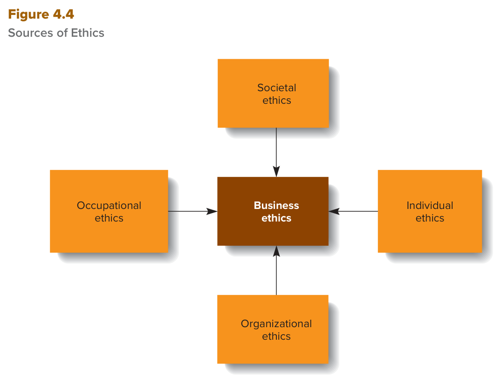
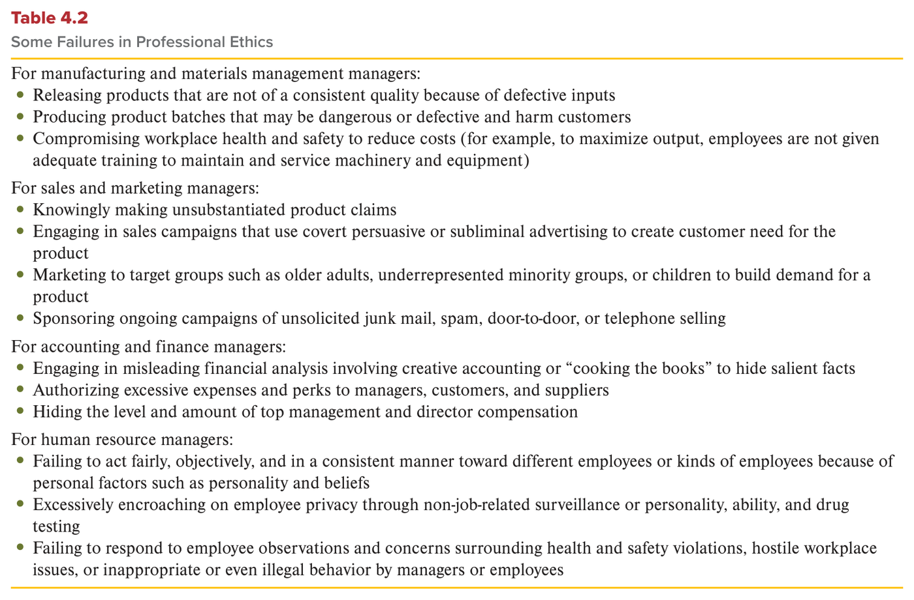
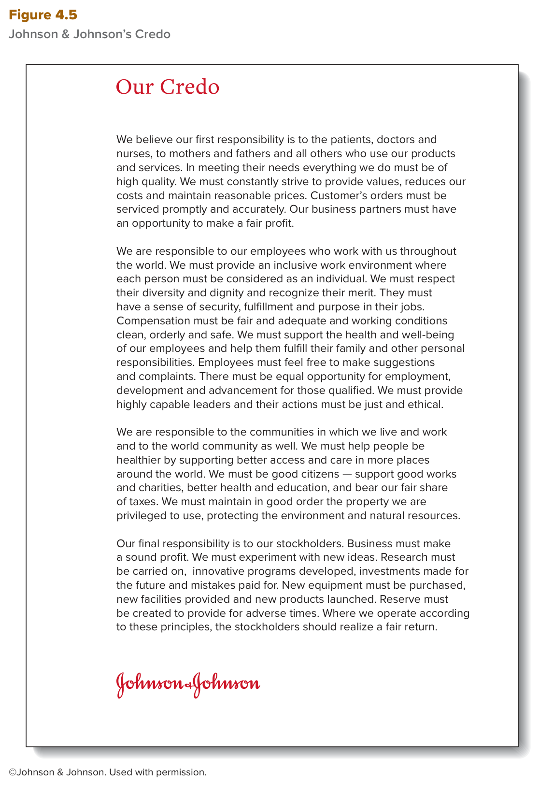

MGT 102 · Chapter 4 · القسم ٣ من ٤:
Sources of Managerial Ethics
الهدف LO4-5: Identify the four main sources of managerial ethics.
في الدرسين اللي قبل عرفت وش هي الأخلاق (ethics) ومين أصحاب المصلحة (stakeholders)، وتعلّمت الأربع قواعد اللي تحكم فيها على القرار. الحين السؤال اللي يفتح فيه الكتاب القسم هذا: ليش شركة زي Microsoft معروفة بأخلاقها، وشركة زي Wells Fargo تورّطت مرة ورا مرة؟ جواب الكتاب: أربع مصادر تشكّل أخلاق أي مدير وأي شركة — المجتمع، المهنة، الفرد، والمنظمة.
ركّز من الحين على شيئين: (١) العدد أربعة — الفصل كله مليان أربعات، والاستثناء الوحيد هو ستة أصحاب مصلحة. (٢) occupational مقابل organizational: الاسمين يبدون متشابهين بالإنجليزي، بس الأول عن مهنتك والثاني عن شركتك، والاختبار يلعب على هذا. وفي الدرس شكلين وجدول — Figure 4.4 وTable 4.2 وFigure 4.5 — وكلها تنسأل.
الكتاب يبدأ بمقارنة بين نوعين من الشركات:
| شركات معروفة بممارساتها الأخلاقية | شركات تورّطت مرة ورا مرة في أنشطة غير أخلاقية وغير قانونية |
|---|---|
| Accenture · Best Buy · Colgate-Palmolive · Microsoft · PepsiCo (خمس شركات) | Theranos (طلعت من السوق خلاص — out of business)، وSiemens وWells Fargo (انعادت هيكلتهم بالكامل — totally restructured) |
وش يفسّر الفرق هذا؟ الكتاب يقول فيه أربع محدّدات رئيسية (four main determinants) للفروق في الأخلاق — بين الناس، والموظفين، والشركات، والدول:
| # | المصدر | بالعربي | يجي من وين | مثال الكتاب |
|---|---|---|---|---|
| ١ | Societal ethics | أخلاق المجتمع | قوانين المجتمع وعاداته وممارساته، وقيمه وأعرافه غير المكتوبة | الرشوة: عادية في دول اقتصادها متعثّر، وغير قانونية في أمريكا |
| ٢ | Occupational ethics | أخلاق المهنة | قواعد وأعراف المهنة أو التجارة أو الحرفة | أخلاقيات الطب · فضيحة Volkswagen |
| ٣ | Individual ethics | أخلاق الفرد | العايلة، الأقران، التربية، والمدارس والأديان | ولد رجل العصابات · DoorDash وGrubhub |
| ٤ | Organizational ethics | أخلاق المنظمة | ممارسات الشركة ومعتقداتها — وخصوصاً أخلاق كبار مدراء الشركة | credo شركة Johnson & Johnson · Arthur Andersen |

هذا هو Figure 4.4. فيه خمس مربعات: في النص مربع غامق اسمه Business ethics (أخلاق الأعمال)، وحوله أربع مربعات برتقالية كل واحد له سهم داخل على المركز — Societal ethics فوق، Individual ethics يمين، Organizational ethics تحت، وOccupational ethics يسار. كيف تقرأه: الأسهم كلها رايحة للمركز — يعني الأربعة هم المصادر (المدخلات)، وأخلاق الأعمال هي النتيجة. وش يُسأل عنه: كم مصدر؟ ٤. وش اللي في المركز؟ Business ethics. وأي اختيار يحط مصدر خامس زي legal ethics أو stakeholder ethics = غلط.
نفس الفكرة في ملخّص الكتاب (Summary and Review) بصياغة ثانية: المحدّدات الرئيسية للفروق في business ethics عند المدير والشركة والدولة هي الأربعة نفسها. وسؤال النقاش رقم ٥ في آخر الفصل حرفياً: What are the main determinants of business ethics? — وجوابه هذا الجدول.
انتبه لاسم القسم في الكتاب: العنوان الجانبي للهدف LO4-5 مكتوب
Ethics and Social Responsibility، بس محتواه كله عن مصادر الأخلاق. والربط مع الدرس الجاي:
أخلاق الشركة هي نتيجة الأربعة مصادر، وأخلاق الشركة بعدين هي اللي تحدد موقفها من المسؤولية الاجتماعية
(social responsibility — درس ٤).
There are four main determinants of differences in ethics among people, employees, companies, and countries: societal ethics, occupational ethics, individual ethics, and organizational ethics—especially the ethics of a company's top managers (see Figure 4.4).
The main determinants of differences in a manager's, company's, and country's business ethics are societal, occupational, individual, and organizational.
التعريف فيه أربع قضايا: fairness, justice, poverty, and the rights of the individual — الإنصاف، العدالة، الفقر، وحقوق الفرد. احفظها لأن الاختيارات الغلط تبدّل وحدة منها بشي ثاني.
من وين تجي؟ (emanate from) من مصدرين:
كيف تشتغل؟ الناس في بلد معيّن ممكن يتصرفون بأخلاق تلقائياً (automatically)، لأنهم internalized — يعني خلّوا قيم ومعتقدات وأعراف معيّنة جزء من أخلاقهم (made a part of their morals) — وهذي القيم تقول لهم كيف يتصرفون لما يواجهون ethical dilemma (ورطة أخلاقية).
تختلف من مجتمع لمجتمع (Societal ethics vary among societies) — وأمثلة الكتاب:
| المجموعة | وش يقول الكتاب |
|---|---|
| Denmark, Iceland, Sweden, Switzerland | معروفين إنهم من أكثر دول العالم أخلاقاً، عندهم قيم قوية عن النظام الاجتماعي (social order) وعن خلق مجتمع يحمي رفاه كل مواطنيه. |
| دول كثيرة اقتصادها متعثّر | الرشوة (bribery) ممارسة معتادة عشان تمشي الأمور — زي تركيب إنارة أو ترسية عقد. |
| أمريكا والدول اللي اقتصادها متقدّم | الرشوة غير أخلاقية وصارت غير قانونية (unethical and has been made illegal). |
بس حتى الدول «الأخلاقية» فيها فساد — مثال Samherji:
الدرس: تصنيف الدولة كـ«أخلاقية» يوصف مجتمعها، بس ما يضمن إن كل شركة فيها نظيفة.
Societal ethics are standards that govern how members of a society should deal with one another in matters involving issues such as fairness, justice, poverty, and the rights of the individual. Societal ethics emanate from a society's laws, customs, and practices and from the unwritten values and norms that influence how people interact with each other.
Societal ethics vary among societies. In the United States and other economically advanced countries, bribery is considered unethical and has been made illegal.
التعريف فيه ثلاث كلمات لازم تعرفها: a profession, trade, or craft (مهنة، تجارة، حرفة) + when performing work-related activities (وهم يأدّون أنشطة الشغل). أمثلة الكتاب:
داخل المنظمة: قواعد المهنة وأعرافها غالباً تحكم كيف موظفين زي المحامين والباحثين والمحاسبين ياخذون قراراتهم لخدمة مصالح أصحاب المصلحة. والموظف يستبطن (internalize) قواعد مجموعته المهنية — بالضبط زي ما يستبطن قواعد المجتمع — ويتبعها تلقائياً. وعشان أغلب الناس يمشون على قواعد سلوك ثابتة، الناس غالباً تاخذ الأخلاق كمسلّمة (take ethics for granted) — لين تنكسر.
مثال الكتاب على انتهاك أخلاق المهنة: لما المهندسين يعدّلون البرمجيات عشان يخفون الآثار الضارة للمنتجات. وهذا اللي صار في فضيحة انبعاثات الديزل (diesel emission scandal) — الشركة انمسكت وهي تتلاعب ببعض محركات الديزل عشان تنجح في اختبارات الانبعاثات الأمريكية. احفظ الأرقام:
| الرقم | وش هو |
|---|---|
| ٢٠١٧ | السنة اللي انحكم فيها على Volkswagen |
| $2.8 billion | غرامة جنائية (criminal penalty) |
| أكثر من $35 billion | إجمالي التكاليف ضمن التسوية مع وزارة العدل الأمريكية (U.S. Justice Department) |
| قرابة 500,000 | سيارة ديزل اضطرت تشتريها من جديد في أمريكا (داخلة ضمن الـ $35 مليار) |
| ٨ على الأقل | موظفين حاليين وسابقين انوجّهت لهم تهم جنائية |
| الأكبر | أكبر غرامة انفرضت على أي شركة سيارات لين اليوم |
الكتاب يحط جدول بـبعض الإخفاقات في أخلاق المهنة حسب نوع المدير الوظيفي (according to the type of functional manager). ٤ فئات و١٣ إخفاق:
| نوع المدير | العدد | الإخفاقات |
|---|---|---|
| Manufacturing and materials management managers التصنيع وإدارة المواد | ٣ |
|
| Sales and marketing managers المبيعات والتسويق | ٤ |
|
| Accounting and finance managers المحاسبة والمالية | ٣ |
|
| Human resource managers الموارد البشرية | ٣ |
|

هذا هو Table 4.2. لاحظ العنوان: Professional Ethics — يعني occupational ethics بكلمة ثانية. الجدول مقسّم ٤ أقسام، كل قسم يبدأ بسطر «For … managers:» (نوع المدير)، وتحته نقاط خضرا = الإخفاقات النموذجية في وظيفته. كيف تقرأه: العدد ٣ + ٤ + ٣ + ٣ = ١٣، والمبيعات والتسويق هي الفئة الوحيدة اللي فيها ٤. وش يُسأل عنه: يعطيك إخفاق ويسألك أي مدير وظيفي يخصّه — زي cooking the books → accounting and finance، وsubliminal advertising → sales and marketing.
Occupational ethics are standards that govern how members of a profession, trade, or craft should conduct themselves when performing work-related activities. For example, medical ethics govern how doctors and nurses should treat their patients.
Like society at large, most professional groups can impose punishments for violations of ethical standards. Doctors and lawyers can be prevented from practicing their professions if they disregard professional ethics and put their own interests first.
Employees internalize the rules and norms of their occupational group (just as they do those of society) and often follow them automatically when deciding how to behave. Table 4.2 lists some failures or lapses in professional ethics according to the type of functional manager.
الكلمة المفتاحية في التعريف: when their own self-interests are at stake (لما مصلحتهم الذاتية على المحك). من وين تجي أخلاق الفرد؟ الكتاب يعدّها:
| المصدر | بالعربي |
|---|---|
| Family | تأثير العايلة |
| Peers | الأقران — ربعك وزملاءك |
| Upbringing in general | التربية عموماً |
| تجارب العمر عن طريق العضوية في social institutions | مؤسسات اجتماعية زي المدارس والأديان (schools and religions) |
مثال الكتاب الصادم: لو أنت ولد أو بنت رجل عصابات (mobster)، وتربيتك وتعليمك صارت في جو جريمة منظّمة، فهذا يأثّر على كيف تقيّم المواقف. ممكن توصل إنك تعتقد إن أي فعل — حتى القتل — أخلاقي لو ينفع عايلتك أو ربعك. هذي أخلاقك أنت، بس هي واضح إنها مو أخلاق المجتمع الأوسع، فهي معرّضة للعقوبة (subject to sanction).
نفس الشي في الشركات: المدراء والموظفين ممكن يوصلون إنهم يعتقدون إن اللي يسوونه عشان يروّجون أو يحمون منظمتهم أهم من أي ضرر يسببونه لأصحاب مصلحة ثانيين — فيتصرفون بشكل غير أخلاقي أو غير قانوني، ولما ينكشف ممكن ينعاقبون.
مثال الكتاب — مدينة Chicago ضد DoorDash وGrubhub: المدينة رفعت دعوى بتهمة خداع العملاء واستخدام ممارسات تجارية غير عادلة. الشكوى تقول إن المنصّتين:
الشركتين قالوا الدعاوى "baseless" (بدون أساس)، ولين وقت كتابة الفصل الدعاوى معلّقة بس ماشية في المحاكم. وشيكاغو أعلنت تسوية بـ$10 مليون مع Uber Eats على ممارسات غير أخلاقية مشابهة.
الخلاصة اللي يقولها الكتاب: قرارات كثيرة يشوفها شخص غير أخلاقية — زي استخدام الحيوانات في اختبار مستحضرات التجميل (cosmetics testing) — ممكن تكون مقبولة عند شخص ثاني. ولو السلوك مو غير قانوني، الناس يا إنهم يتفقون إنهم مختلفين (agree to disagree)، يا إنهم يحاولون يفرضون معتقداتهم على غيرهم ويحوّلونها قانون. وفي كل الحالات، لازم الناس يطوّرون ويتبعون المعايير الأخلاقية اللي شرحها الكتاب قبل (الأربع قواعد — درس ٢) عشان يوازنون مصلحتهم مقابل مصلحة غيرهم.
Individual ethics are personal standards and values that determine how people view their responsibilities to other people and groups and, thus, how they should act in situations when their own self-interests are at stake. Sources of individual ethics include the influence of one's family, peers, and upbringing in general. The experiences gained over a lifetime—through membership in social institutions such as schools and religions, for example—also contribute to the development of the personal standards and values that a person uses to evaluate a situation and decide what is the morally right or wrong way to behave.
In all cases, however, people should develop and follow the ethical criteria described earlier to balance their self-interests against those of others when determining how they should behave in a particular situation.
الأخلاق الفردية لـمؤسسي الشركة وكبار مدرائها مهمة بشكل خاص في تشكيل code of ethics (مدوّنة أخلاق) المنظمة. منظمات كان لمؤسسيها دور حيوي في خلق مدوّنة سلوك عالية الأخلاق (أربع بالاسم): UPS، Procter & Gamble، Johnson & Johnson، وthe Prudential Insurance Company.
مدوّنة Johnson & Johnson — اسمها credo — تعكس اهتمام متطوّر بأصحاب المصلحة. والـcredo له ثلاث أهداف حسب الكتاب:

هذا هو Figure 4.5 — نص مدوّنة J&J كامل تحت عنوان Our Credo. فيه ٤ فقرات = ٤ مسؤوليات مرتّبة بالأولوية. أول فقرة تبدأ بـ We believe our first responsibility is to the patients, doctors and nurses…، وآخر فقرة تبدأ بـ Our final responsibility is to our stockholders. كيف تقرأه: الترتيب نفسه هو الرسالة — العملاء/المرضى أول، والمساهمين آخر. وانتبه إن المدوّنة تقول stockholders مو shareholders (نفس المعنى). وش يُسأل عنه: مين أول مسؤولية؟ مين الأخيرة؟ أو يعطيك جملة من الفقرة («fair share of taxes») ويسألك لأي مجموعة.
| الترتيب | المسؤولية تجاه | أبرز اللي تقوله الفقرة |
|---|---|---|
| ١ — first | المرضى والأطباء والممرّضين، والأمهات والآباء، وكل اللي يستخدم منتجاتنا وخدماتنا | كل شي بجودة عالية · تقليل التكاليف وأسعار معقولة · طلبات العملاء تنخدم بسرعة ودقة · شركاء الأعمال لهم فرصة ربح عادل |
| ٢ | الموظفين حول العالم | بيئة عمل شاملة (inclusive) وكل شخص يُعامل كفرد · احترام التنوّع والكرامة · إحساس بالأمان والإنجاز والمعنى · تعويض عادل وكافي · ظروف عمل نظيفة ومرتبة وآمنة · دعم صحتهم ومسؤولياتهم العائلية · حرية الاقتراحات والشكاوى · تكافؤ الفرص · قادة أكفاء أفعالهم عادلة وأخلاقية |
| ٣ | المجتمعات اللي نعيش ونشتغل فيها، والمجتمع العالمي | نساعد الناس يصيرون أصح · نكون مواطنين صالحين: أعمال خيرية، صحة وتعليم أحسن، وحصّتنا العادلة من الضرائب · نحافظ على الممتلكات ونحمي البيئة والموارد الطبيعية |
| ٤ — final | المساهمين (stockholders) | الشركة لازم تحقق ربح سليم (sound profit) · تجرّب أفكار جديدة · بحث وبرامج مبتكرة واستثمار للمستقبل ودفع ثمن الأخطاء · معدات ومنشآت ومنتجات جديدة · احتياطي للأوقات الصعبة · ولو مشينا على المبادئ هذي المساهمين يحققون عائد عادل |
المدراء أو العمّال ممكن يتصرفون بشكل غير أخلاقي لو حسّوا بضغط من الموقف ومن كبار مدراء غير أخلاقيين. والناس عادةً تواجه القضايا الأخلاقية لما توازن مصلحتها الشخصية مقابل أثر أفعالها على غيرها.
مثال الكتاب: مدير يعرف إن ترقيته لـvice president شبه أكيدة لو جاب عقد بـ$100 مليون، بس العقد يحتاج رشوة $1 مليون لصاحب العقد. يبرّر لنفسه: هذا يضمن مستقبلي، ووش الضرر أصلاً؟ الرشوة منتشرة، ولو أنا ما دفعت أكيد غيري بيدفع.
نتيجة البحث (احفظها): الناس اللي يحسّون إن عندهم أكثر شي على المحك — وظيفياً أو مالياً — هم الأكثر احتمالاً يتصرفون بشكل غير أخلاقي. وبالضبط في الموقف هذا، مدوّنة أخلاق تنظيمية قوية تساعد الشخص يتصرف صح. مثال إيجابي: The New York Times عندها مدوّنة أخلاق مفصّلة كتبها محرروها عشان يضمنون نزاهة وصدق صحفييها وهم ينقلون معلومات حسّاسة.
دور كبار المدراء: لو أيّدوا مبادئ الـcredo باستمرار (consistently endorse)، يقدرون يمنعون الموظفين من الانحراف. والمطلوب منهم شيئين:
والشركات كمان تقدر تزرع السلوك الأخلاقي في عملياتها (إطار Manager as a Person تحت). والموظفين أكثر احتمالاً بكثير يتصرفون بشكل غير أخلاقي لما ما فيه credo أو ينتجاهل.
مثال سلبي — Arthur Andersen (شركة محاسبة): ما اتبعت مدوّنتها أبد. شركاؤها اللي بلا ضمير (unscrupulous partners) أمروا المدراء الوسطى يمزّقون السجلات اللي تثبت غلطهم. المدراء الوسطى كانوا عارفين إنه غلط، بس نفّذوا لأنهم استجابوا لسلطة الشركاء الشخصية ومكانتهم — مو لمدوّنة الشركة. خافوا يخسرون وظايفهم لو ما سوّوها، وخسروها على كل حال لما الشركة انجبرت تقفل بسبب ممارساتها غير الأخلاقية.
المنظمات غالباً تفترض إن السلوك الأخلاقي = تعليم المعايير + معاقبة المخالفين. الاثنين لازمين، بس التعليم والعقاب لحالهم غالباً يفشلون. ليش؟ لأن الموظف أحياناً يشتغل في نظام المكافأة الفورية للسلوك غير الأخلاقي فيه أكبر من مكافأة البديل الأخلاقي — الموظف اللي يقفل صفقة ياخذ مدح فوري وحماسي، وأي تحقيق في كيف قفلها ممكن يجي بعد فترة طويلة، أو ما يجي أبد.
| المفهوم | وش هو | مثال الكتاب |
|---|---|---|
| Nudging الدفعة اللطيفة |
تخلّي الفعل المرغوب أسهل في الاختيار (making a desired action easier to choose) | خطط ادّخار التقاعد: موظفين كثير ما كانوا يشتركون (يمكن لأن الاشتراك ينقّص راتبهم). الشركات اللي خلّت الاشتراك هو الوضع الافتراضي (the default) — واللي يبي يطلع لازم يطلب — شافت مشاركة أكثر |
| لما الـnudge يفشل أو يرتد | النظرة المبسّطة للـnudging ممكن تفشل أو حتى ترتد عكسياً (backfire) | شركة تبي توفّر موارد ترسل تذكيرات بالإيميل: (١) تهم بس الموظفين المهتمين بالبيئة أصلاً · (٢) التكرار يزعج فيقاومونها · (٣) nudges مبنية على بيانات تفصيلية عنهم بدون علمهم وموافقتهم يشوفونها غير أخلاقية |
| Behavioral risk management إدارة المخاطر السلوكية |
طريقة لتعزيز السلوك الأخلاقي تستخدم طرق بحث متنوعة عشان تفهم كيف أنظمة الشركة وعملياتها تشكّل سلوك الموظف — والـnudges جزء منها | تدوّر على ٣ علامات إنذار (red flags): لوم الموظفين شخصياً لما شي يخرب · توزيع المكافآت بشكل غير عادل · نقص الثقة بين الزملاء |
| مثال الحل | شركة تأمين موظفينها حسّوا إن أهدافهم وأهداف زملاءهم متنافسة | سوّوا توقيع إيميل فيه أسماء ووجوه ومسمّيات كل أعضاء الفريق اللي يخدم العميل — فكل ما أرسل الموظف إيميل يتذكّر إنه يمثّل فريق |
كبار المدراء لهم دور حاسم في تحديد أخلاق الشركة، فلازم مجلس الإدارة (board of directors) يدقّق في سمعة وسجل أخلاق كبار المدراء قبل ما يعيّنهم:
تمرين آخر الفصل (Managing Ethically — Double Standard in Ingredients?، مربوط بـLO4-5):
Unilever انتقدها العملاء في الصين لأن آيس كريم Magnum هناك فيه مكونات أقل من نسخة أوروبا
(حليب بودرة بدل الحليب المكثّف، وزيت نباتي أكثر). والسؤال اللي يطرحه: ليش قيم المنظمة وأعرافها ممكن
تصير قوية زيادة عن اللزوم وتقود لسلوك غير أخلاقي، وكيف تمنع الشركة قيمها إنها تنغلق على نفسها لين المدراء
ينسون مسؤوليتهم تجاه أصحاب المصلحة؟
Organizational ethics are the guiding practices and beliefs through which a particular company and its managers view their responsibility toward their stakeholders. The individual ethics of a company's founders and top managers are especially important in shaping the organization's code of ethics.
Johnson & Johnson's code of ethics—its credo—reflects a well-developed concern for its stakeholders (see Figure 4.5). Company credos, such as that of Johnson & Johnson, are meant to deter self-interested, unethical behavior; to demonstrate to managers and employees that a company will not tolerate people who, because of their own poor ethics, put their personal interests above the interests of other organizational stakeholders and ignore the harm they are inflicting on others; and to demonstrate that those who act unethically will be punished.
Research seems to suggest that people who realize they have the most at stake in a career sense or a monetary sense are the ones most likely to act unethically. Employees are much more likely to act unethically when a credo does not exist or is disregarded.
Increasingly, managers seeking alternatives consider “nudging” employees—that is, making a desired action easier to choose. This approach to promoting ethical conduct, often called behavioral risk management, uses various research methods to understand how a company's systems and processes shape employee behavior.
Top managers play a crucial role in determining a company's ethics.
الأسئلة بالإنجليزي لأن الاختبار بالإنجليزي. جاوب قبل ما تفتح الحل. لو غلطت في ١ أو ٥ ارجع لجدول المصادر الأربعة، ولو غلطت في ٣ ارجع لفخ «الصحة والسلامة تجي مرتين».
B. الفرق هنا بين دول — والكتاب يقول Societal ethics vary among societies، وهذا بالضبط مثاله على societal ethics: الرشوة عادية في دول اقتصادها متعثّر، وغير أخلاقية وغير قانونية في أمريكا. الفخ في A: occupational عن قواعد مهنة (طبيب، محامي)، مو بلد. وC فخ: organizational عن شركة وحدة ومدوّنتها. وD فخ: individual عن معايير شخص من عايلته وتربيته.
D. في Figure 4.4 المربع الغامق في النص مكتوب عليه Business ethics، والأربع أسهم كلها داخلة عليه. الفخ في B: organizational ethics واحد من المصادر الأربعة (المربع اللي تحت)، مو المركز. وA فخ: صحيح إن أخلاق الشركة بعدين تحدد موقفها من social responsibility، بس هذا موضوع درس ٤ ومو مرسوم في الشكل. وC فخ: الـcredo أداة من أدوات organizational ethics (Figure 4.5).
A. في Table 4.2 البند هذا ثالث نقطة تحت For manufacturing and materials management managers، ومثاله: عشان يزيدون الإنتاج ما يدرّبون الموظفين كفاية على صيانة الآلات. الفخ في B: الموارد البشرية فيها بند ثاني عن الصحة والسلامة — failing to respond to employee observations and concerns surrounding health and safety violations — يعني عدم الاستجابة للمخاوف، مو تقليل التكاليف. وC وD فخاخ: المبيعات = ادعاءات وإعلانات لا شعورية، والمحاسبة = cooking the books والامتيازات.
C. أول جملة في Figure 4.5 حرفياً: We believe our first responsibility is to the patients, doctors and nurses, to mothers and fathers and all others who use our products and services. الفخ في A: المساهمين هم آخر مسؤولية (Our final responsibility is to our stockholders) — الاختيار هذا يلعب على توقّعك إن الشركة تحط المُلّاك أول. وB هي الثانية، وD هي الثالثة.
B. الكتاب يعدّ مصادر individual ethics: family, peers, and upbringing in general، وتجارب العمر عن طريق social institutions such as schools and religions. والسؤال قال personal standards and values — وهذي بداية تعريف individual ethics بالضبط. الفخ في A: كلمة «social institutions» والمدارس والأديان تخليك تفكر في المجتمع، بس الكتاب حاطها مصدر لأخلاق الفرد. وC فخ: ما فيه ذكر لمهنة. وD فخ: ما فيه ذكر لشركة أو مدوّنة.
| English | بالعربي | الفخ |
|---|---|---|
| Sources of managerial ethics | مصادر أخلاق المدير | أربعة: societal · occupational · individual · organizational — مو ستة |
| Business ethics | أخلاق الأعمال | المربع اللي في مركز Figure 4.4 — النتيجة، مو مصدر |
| Societal ethics | أخلاق المجتمع | أربع قضايا: fairness · justice · poverty · rights of the individual؛ تجي من القوانين والأعراف غير المكتوبة |
| Internalize | يستبطن | يخلّي القيم جزء من أخلاقه فيتصرف تلقائياً — يصير مع المجتمع ومع المهنة |
| Occupational ethics | أخلاق المهنة | profession, trade, or craft + work-related activities؛ مثال VW؛ مو organizational |
| Medical ethics | أخلاقيات الطب | مثال occupational: الإجراءات الضرورية بس ولمصلحة المريض |
| Professional ethics | أخلاق المهنة | كلمة Table 4.2 = occupational ethics؛ ٤ فئات و١٣ إخفاق، المبيعات والتسويق وحدها فيها ٤ |
| Individual ethics | أخلاق الفرد | self-interests are at stake؛ المصادر: العايلة، الأقران، التربية، المدارس والأديان |
| Bait and switch | الطُعم والتبديل | رسوم توصيل قليلة تجذبك وبعدين رسوم زيادة قبل الطلب (DoorDash/Grubhub) |
| Organizational ethics | أخلاق المنظمة | مسؤولية الشركة ومدراءها تجاه stakeholders؛ تتشكّل من أخلاق المؤسسين وكبار المدراء |
| Code of ethics / credo | مدوّنة الأخلاق | ثلاث أهداف: يردع · يبيّن عدم التسامح · يبيّن العقاب. الموظف يغلط أكثر لما ما فيه credo أو ينتجاهل |
| Johnson & Johnson's Credo | مدوّنة جونسون آند جونسون | المرضى/المستخدمين أول → الموظفين → المجتمعات → stockholders آخر |
| Nudging | الدفعة اللطيفة | making a desired action easier to choose — تسهيل مو إجبار (مثال الوضع الافتراضي في التقاعد) |
| Behavioral risk management | إدارة المخاطر السلوكية | طرق بحث لفهم أثر أنظمة الشركة وعملياتها على سلوك الموظف |
| Red flags | علامات الإنذار | ثلاث: لوم الموظفين شخصياً · مكافآت غير عادلة · نقص الثقة بين الزملاء |
مبني من نص الكتاب Contemporary Management (Jones & George، McGraw Hill) —
Chapter 4: Ethics and Social Responsibility، القسم اللي عنوانه الجانبي Ethics and Social Responsibility
(Societal, Occupational, Individual, and Organizational Ethics)، الهدف LO4-5 (صفحات ١٠٦–١١١)، مع ملخّص الكتاب
Summary and Review وسؤال النقاش رقم ٥.
ملخّص بس: إطار Manager as a Person (Do People Just Need a Nudge?) مذكور بنقاطه الأساسية،
وتمرين آخر الفصل Managing Ethically (Double Standard in Ingredients? — Unilever) مذكور بفكرته وسؤاله بس.
الأربع قواعد الأخلاقية (LO4-3) في درس ٢، ومواقف المسؤولية الاجتماعية (LO4-6) في درس ٤.